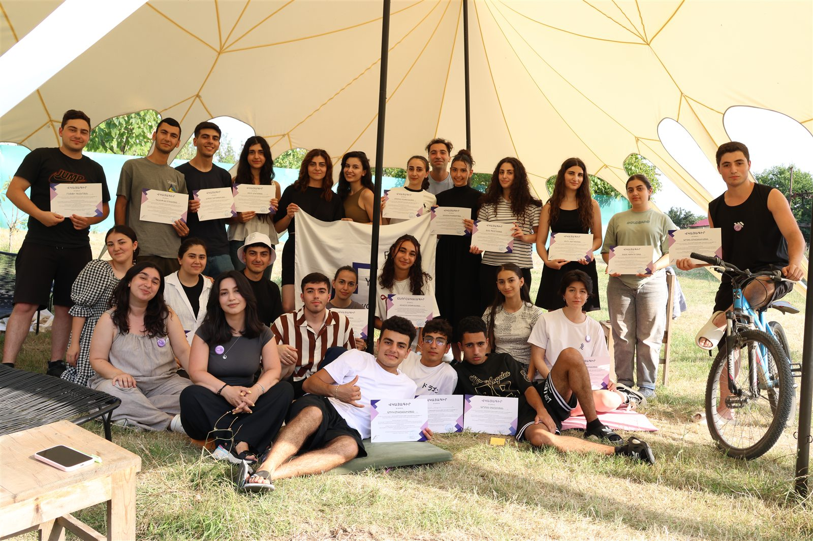
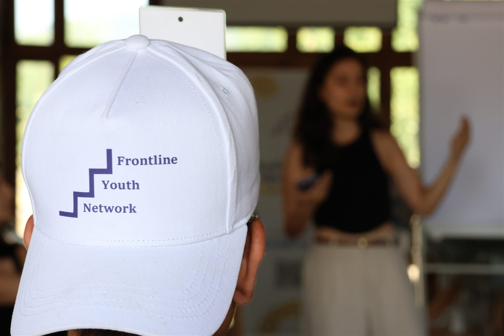
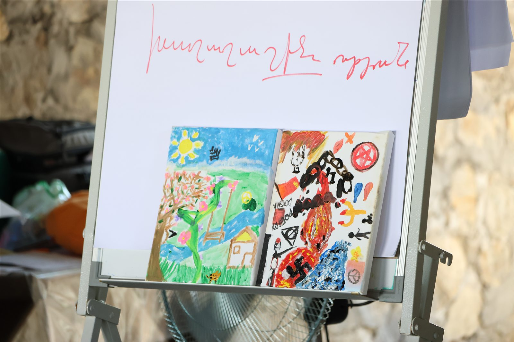
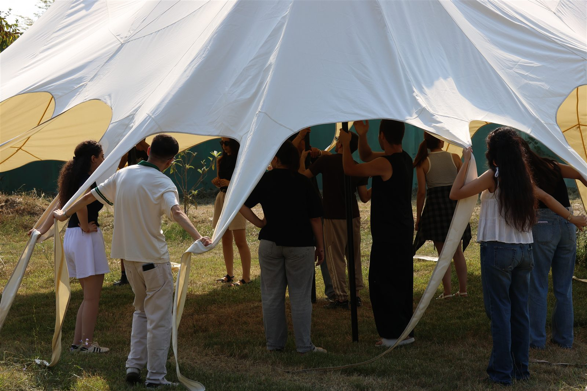
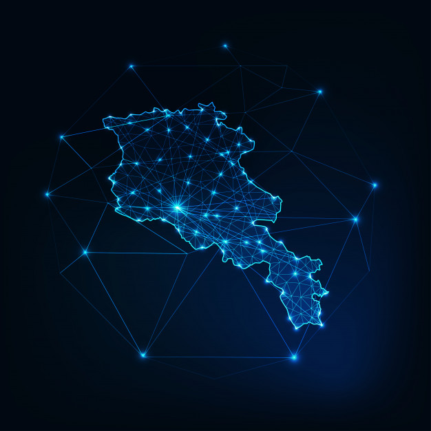
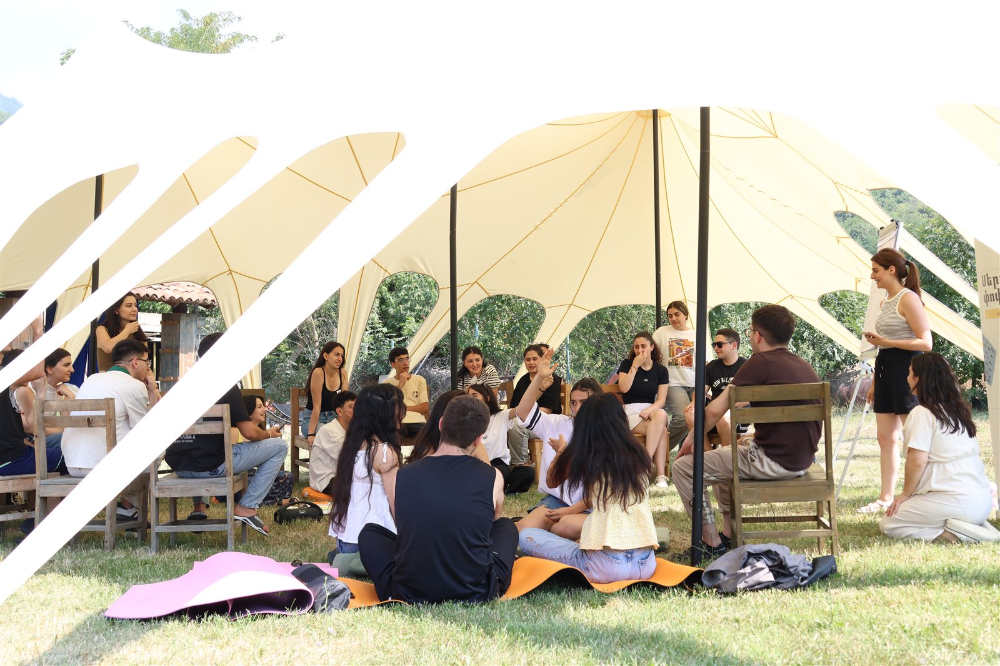
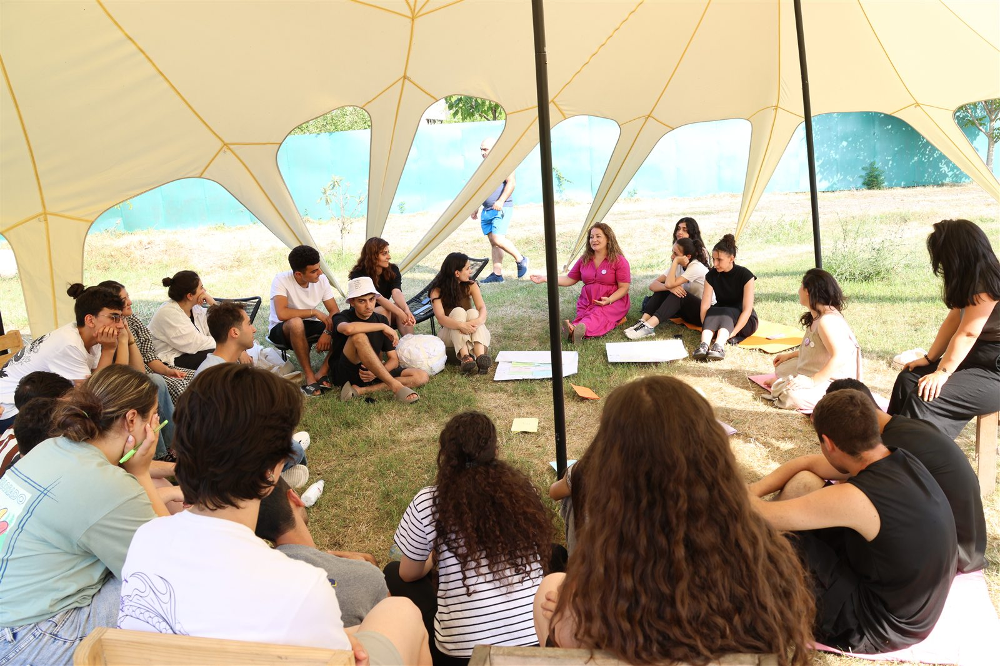
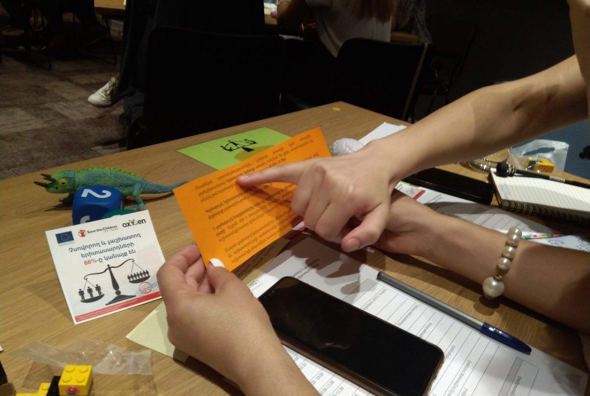
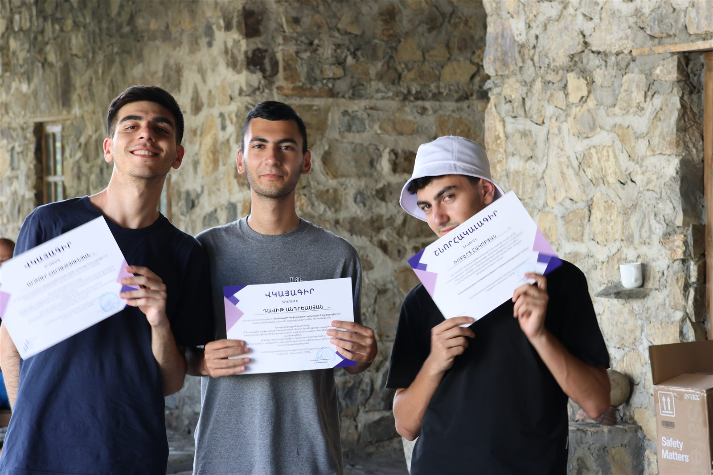
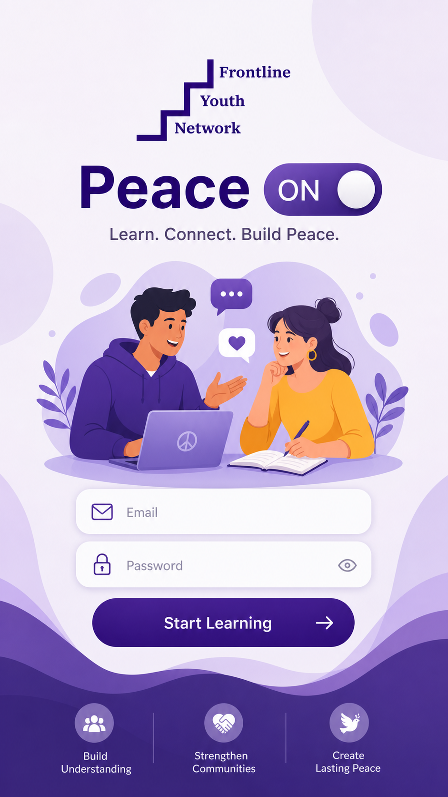

The General Council Assembly of FYN was held on July 9th to 10th
The gathering brought together Frontline's office, main committee, and working groups.
Read storyStories from the network
Follow our programmes, ideas, events, and the young people turning learning into action across Armenia.
12 stories
All updates
The gathering brought together Frontline's office, main committee, and working groups.
Read story
Teachers tested practical methods for introducing peace and dialogue into social studies.
Read story
Around 100 teachers and students joined another round of peacebuilding education training.
Read story
Frontline invited a communications professional to join its youth-centred team.
Read story
Young people's collages explored identity, belonging, and their visions for Armenia's future.
Read story
A call for young people ready to explore activism, peace, equality, and environmental action.
Read story
A participant's view of learning, community, and turning young people's ideas into action.
Read story
A personal story about confidence, connection, and growing into youth leadership.
Read storyMilena shares her experience of youth activism and community development.
Read storyYoung people used photography to imagine, question, and redefine peace.
Read story
A project examining student experiences and challenges in Armenia's rental housing market.
Read story
A reflection on ecological thought, environmental responsibility, and emerging green ideas.
Read storyNo stories are available in this category yet.